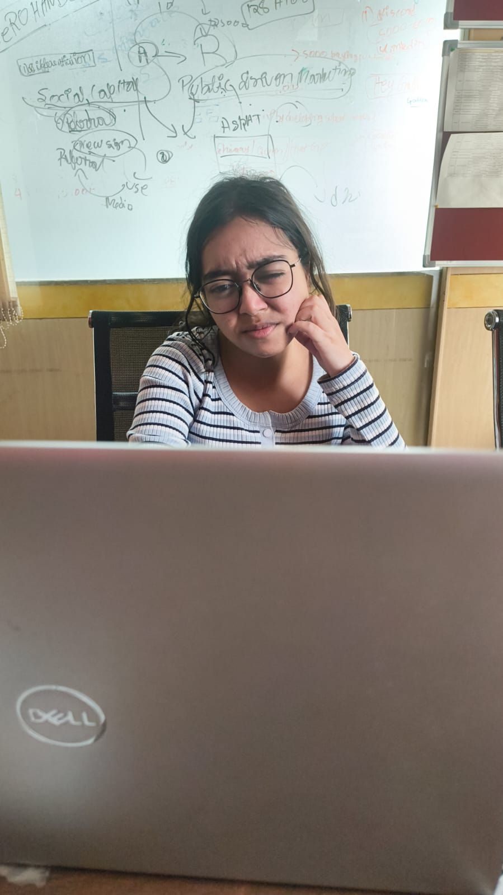

She’s building fun things, breaking a few, and probably fixing one right now...
hi, it's me
(o)-. `|' \(| ,- \|/
(o) -.(| , \|/
01 / Who I am
An ECE student who learns by taking things apart.
2025 — 2026
FuturixAI
Product Engineer
Decision model · Data pipelines · LLM validation
2025
BHEL, Bengaluru
Electronics & Control Systems Intern
DCS automation · Panel testing

Whiteboard, laptop, deadline.
I'm an ECE student at NSUT, and I like building fun things, then taking them apart to see how they work. That curiosity has taken me from wiring control panels at BHEL to cutting a 30B-parameter AI model down until it runs on a phone.
Most of my building happens on a screen: ML and data pipelines at FuturixAI, product flows, pitch decks, and 38 social posts that make technical ideas easy to follow.
Away from the screen, I'm still making things. I paint, fold origami, and will happily lose an afternoon to any kind of art. And I'm at my best with a dog around, ideally my golden retriever, who supervises most of it.
Four hats, one habit
Design it, code it, wire it, train it.
Hat 01
Designer
Product flows and prototypes at FuturixAI, 38 social posts, two pitch decks, and event merch. Graphic Design Head, 2025–26.
Hat 02
Coder
Python, C and C++. A document pipeline across 64+ government, PSU and e-procurement sources, plus app connectors and retrieval for ZeroDesk.
Hat 03
Electronics engineer
ECE at NSUT. DCS power plant automation at BHEL: control-panel wiring, testing and commissioning. MATLAB and Simulink.
Hat 04
ML engineer
The FxAI Decision Model at FuturixAI, and a gradient-free way to cut Qwen3-30B into maths specialists that run on a phone.
02 / Selected work
Making AI smaller, apps simpler, and tech easier to follow.
Our maths model already runs on-device, on a phone. Next, I want to take it all the way to the edge: custom hardware with a keypad and a screen that solves a problem, teaches you every step of how it got there, and runs fully offline. No cloud, no internet, just the model in your hand.
Drag to turn · Prototype render
Glasses: the working, in your lens
The brain
Our maths model, already running on-device in 16 GB of RAM. Next stop: a small single-board computer.
The body
Custom hardware: a keypad, a small screen, a battery, and a 3D-printed case that actually fits in a pocket.
The story
I'll film it from the first boot to the first right answer, and keep every breakdown in.
the first right answer
What I need to build it
A workbench, a box of parts, and people who build physical things every day. If that's you, let's talk.